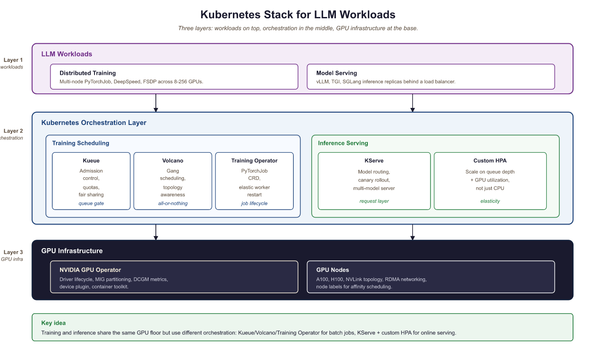

"Kubernetes does not care that your model has 70 billion parameters. It cares about resource requests, health checks, and pod scheduling. The gap between those two worlds is where production LLM engineering lives."
Deploy, Container-Wrangling AI Agent
Kubernetes has become the de facto platform for orchestrating LLM workloads in production, but GPU-intensive LLM training and serving have unique requirements that standard Kubernetes scheduling cannot handle out of the box. This section covers the Kubernetes-native tools and patterns that bridge that gap: GPU-aware batch scheduling with Kueue and Volcano for training jobs, the Kubeflow Training Operator for distributed PyTorchJobs, KServe for production model serving with vLLM and TGI runtimes, NVIDIA GPU Operator for GPU lifecycle management and MIG partitioning, and custom autoscaling strategies tailored to LLM inference workloads. These tools form the infrastructure layer that enables everything from multi-node pretraining runs to low-latency serving of 70B+ models in production.
Prerequisites
This section assumes familiarity with the scaling patterns from Section 62.1: Scaling, Performance, and Production Guardrails and inference optimization from Chapter 9. Application-architecture and deployment patterns are revisited in detail later in the book. Basic Kubernetes knowledge (pods, deployments, services, CRDs) is assumed.
A common joke in the container ecosystem is that Kubernetes is what you get when you reinvent the package manager, the init system, the network stack, and the firewall, but spell each one with a Greek prefix. The pun is unfair (k8s solves problems no Linux package manager ever tried to solve) but it captures something real: every team adopting k8s rediscovers that the cluster is a distributed operating system, and most of the early pain comes from treating it like a heavier Docker.
65.5.1 GPU Scheduling for LLM Training
In a stateless web service, p99 is set by outlier requests and queuing. In token-streaming LLM services, p99 is dominated by long generations: a 5% chance of a response 10x the median length, combined with autoregressive decoding, multiplies p99 by 10x even with a perfect server. This is also why TTFT (time to first token) and TPOT (time per output token) became the dominant SLOs instead of end-to-end latency: they decouple the queuing tail (TTFT) from the length tail (TPOT). Knowing which tail you are debugging tells you which fix applies: TTFT regressions need queue-and-batching attention; TPOT regressions need decoding-speed attention.
Standard Kubernetes scheduling treats GPUs as simple countable resources: a pod requests N GPUs, and the scheduler finds a node with N available. This works for single-node inference but fails for distributed LLM training, which has requirements that the default scheduler cannot express:
- Gang scheduling: A distributed training job needs all its pods to start simultaneously. If only 7 of 8 pods can be placed, the job cannot proceed, and those 7 pods waste GPU resources while waiting for the 8th.
- Topology awareness: Pods in the same tensor-parallel group must be placed on GPUs within the same node (connected by NVLink), while pipeline-parallel groups benefit from being on nodes in the same rack (lower network latency).
- Fair sharing: Multiple teams sharing a GPU cluster need quota management to prevent a single large training job from monopolizing all resources.
- Preemption: High-priority training jobs (nearing deadlines) should be able to preempt lower-priority jobs, which checkpoint and resume later.

Training Operator for batch scheduling; KServe and custom HPA for inference), and GPU infrastructure (NVIDIA GPU Operator with MIG partitioning on A100/H100 nodes)65.5.1.1 Kueue: Admission Control and Quotas
Kueue is the Kubernetes-native job queueing system (part of the Kubernetes SIGs ecosystem) designed for batch and ML workloads. It provides admission control, fair-sharing quotas, and priority-based scheduling for GPU jobs. Kueue does not replace the Kubernetes scheduler; instead, it controls which jobs are admitted to the cluster and when.
Key Kueue concepts for LLM workloads:
- ClusterQueue: Defines the total GPU resources available to a group of users, with borrowing limits and preemption policies.
- LocalQueue: A namespace-scoped queue that teams submit jobs to. Each LocalQueue is bound to a ClusterQueue.
- ResourceFlavor: Distinguishes between GPU types (A100 vs H100), node topologies, or availability zones.
- Workload: Kueue's abstraction of a job. It computes the total resource requirements and decides whether to admit the workload based on quota availability.
apiVersion: kueue.x-k8s.io/v1beta1
kind: ResourceFlavor
metadata:
name: h100-80gb
spec:
nodeLabels:
nvidia.com/gpu.product: "NVIDIA-H100-80GB-HBM3"
topology.kubernetes.io/zone: "us-central1-a"
---
apiVersion: kueue.x-k8s.io/v1beta1
kind: ClusterQueue
metadata:
name: gpu-training-queue
spec:
namespaceSelector: {} # Accept jobs from all namespaces
preemption:
reclaimWithinCohort: Any
withinClusterQueue: LowerPriority
resourceGroups:
- coveredResources: ["cpu", "memory", "nvidia.com/gpu"]
flavors:
- name: h100-80gb
resources:
- name: "nvidia.com/gpu"
nominalQuota: 128 # 128 H100 GPUs total
borrowingLimit: 32 # Can borrow up to 32 from other queues
lendingLimit: 64 # Can lend up to 64 to other queues
- name: "cpu"
nominalQuota: 1024
- name: "memory"
nominalQuota: "8Ti"
---
apiVersion: kueue.x-k8s.io/v1beta1
kind: LocalQueue
metadata:
namespace: llm-team-alpha
name: training-queue
spec:
clusterQueue: gpu-training-queue65.5.1.2 Volcano: Batch Scheduling with Gang Semantics
Volcano is a CNCF project that provides a batch scheduling framework for Kubernetes, with native support for gang scheduling, fair-share policies, and topology-aware placement. For distributed LLM training, Volcano ensures that all pods in a training job are scheduled simultaneously or not at all, preventing resource waste from partial scheduling.
apiVersion: batch.volcano.sh/v1alpha1
kind: Job
metadata:
name: llama-70b-pretraining
namespace: llm-training
spec:
minAvailable: 8 # Gang scheduling: all 8 pods must be schedulable
schedulerName: volcano
plugins:
svc: [] # Create a headless service for pod discovery
ssh: [] # Enable SSH between pods for NCCL
queue: default
policies:
- event: PodEvicted
action: RestartJob # Restart entire job if any pod is evicted
- event: TaskCompleted
action: CompleteJob
tasks:
- replicas: 8 # 8 nodes, each with 8 GPUs
name: trainer
template:
spec:
containers:
- name: trainer
image: nvcr.io/nvidia/pytorch:24.07-py3
command:
- torchrun
- --nproc_per_node=8
- --nnodes=8
- --rdzv_backend=c10d
- --rdzv_endpoint=$(MASTER_ADDR):29400
- train_llm.py
resources:
requests:
nvidia.com/gpu: 8
cpu: "96"
memory: "1500Gi"
limits:
nvidia.com/gpu: 8
env:
- name: NCCL_IB_DISABLE
value: "0" # Enable InfiniBand for NCCL
- name: NCCL_DEBUG
value: "INFO"
schedulerName: volcano
# Topology-aware placement: prefer same rack
affinity:
podAffinity:
preferredDuringSchedulingIgnoredDuringExecution:
- weight: 100
podAffinityTerm:
labelSelector:
matchExpressions:
- key: volcano.sh/job-name
operator: In
values: ["llama-70b-pretraining"]
topologyKey: topology.kubernetes.io/rackminAvailable: 8). All pods must be placed simultaneously or the job stays queued. The podAffinity block prefers same-rack placement to minimize NCCL cross-rack traffic, and RestartJob on eviction ensures the entire job restarts rather than running with missing workers.Who: A cluster operations lead at an AI research lab managing a shared 256-GPU training cluster used by four research teams.
Situation: Teams regularly submitted distributed training jobs requiring 32 to 64 GPUs each. The default Kubernetes scheduler placed pods individually as resources became available.
Problem: A 64-GPU training job had 60 pods placed while 4 waited for resources. Those 60 pods sat idle, consuming 60 GPUs that could have served other jobs. Across the cluster, partial placements wasted 18% of total GPU hours per week, costing roughly $45,000 in idle compute.
Decision: The lead deployed Volcano with gang scheduling (minAvailable set to match each job's total pod count). Jobs were held in the queue until all required pods could be placed simultaneously.
Result: GPU waste from partial placements dropped from 18% to under 2%. Overall cluster utilization rose from 71% to 89%. The four teams reported shorter effective queue times because resources freed by eliminating idle partial jobs became available for complete job placements sooner.
Lesson: Gang scheduling is essential for distributed training on shared clusters. The temporary queue delay of waiting for all resources is far cheaper than the sustained waste of partially placed jobs holding GPUs idle.
65.5.2 Kubeflow Training Operator
The Kubeflow Training Operator provides Kubernetes Custom Resource Definitions (CRDs) for managing distributed training jobs. The PyTorchJob CRD is the most commonly used resource for LLM training, handling the coordination of multi-node PyTorch distributed training including master election, worker discovery, and environment setup.
apiVersion: kubeflow.org/v1
kind: PyTorchJob
metadata:
name: llama-8b-finetune
namespace: llm-training
spec:
elasticPolicy:
rdzvBackend: c10d
minReplicas: 2
maxReplicas: 4 # Elastic: can scale between 2 and 4 nodes
maxRestarts: 3
pytorchReplicaSpecs:
Master:
replicas: 1
restartPolicy: OnFailure
template:
spec:
containers:
- name: pytorch
image: ghcr.io/my-org/llm-trainer:v2.3
command:
- python
- -m
- torch.distributed.run
- --nproc_per_node=8
- --rdzv_backend=c10d
- finetune.py
- --model_name=meta-llama/Llama-3.1-8B
- --dataset=my-org/instruction-data
- --output_dir=/shared/checkpoints/llama-8b-ft
- --per_device_train_batch_size=2
- --gradient_accumulation_steps=4
- --bf16
- --lora_r=16
resources:
requests:
nvidia.com/gpu: 8
cpu: "48"
memory: "256Gi"
limits:
nvidia.com/gpu: 8
volumeMounts:
- name: shared-storage
mountPath: /shared
- name: hf-cache
mountPath: /root/.cache/huggingface
volumes:
- name: shared-storage
persistentVolumeClaim:
claimName: training-pvc
- name: hf-cache
persistentVolumeClaim:
claimName: hf-cache-pvc
Worker:
replicas: 3 # 3 additional workers (4 total with master)
restartPolicy: OnFailure
template:
spec:
containers:
- name: pytorch
image: ghcr.io/my-org/llm-trainer:v2.3
command:
- python
- -m
- torch.distributed.run
- --nproc_per_node=8
- --rdzv_backend=c10d
- finetune.py
- --model_name=meta-llama/Llama-3.1-8B
- --dataset=my-org/instruction-data
- --output_dir=/shared/checkpoints/llama-8b-ft
- --per_device_train_batch_size=2
- --gradient_accumulation_steps=4
- --bf16
- --lora_r=16
resources:
requests:
nvidia.com/gpu: 8
cpu: "48"
memory: "256Gi"
limits:
nvidia.com/gpu: 8
volumeMounts:
- name: shared-storage
mountPath: /shared
- name: hf-cache
mountPath: /root/.cache/huggingface
volumes:
- name: shared-storage
persistentVolumeClaim:
claimName: training-pvc
- name: hf-cache
persistentVolumeClaim:
claimName: hf-cache-pvcelasticPolicy integrates with TorchElastic so training can continue if a worker fails. Both Master and Worker pods mount shared storage for checkpoints and a Hugging Face cache PVC to avoid re-downloading model weights on each restart.The PyTorchJob CRD handles several coordination tasks that are tedious to manage manually: setting the MASTER_ADDR and MASTER_PORT environment variables, configuring WORLD_SIZE and RANK for each worker, creating a headless Service for DNS-based pod discovery, and monitoring pod health to trigger restarts. The elastic policy option integrates with TorchElastic for fault-tolerant training, allowing the job to continue with fewer workers if a node fails (as covered in Section 6.8).
65.5.3 Production LLM Serving on Kubernetes
Serving LLMs in production on Kubernetes requires more than a standard Deployment with a container running vLLM. Production serving needs health checks that understand model loading state, canary rollouts that compare latency and quality metrics between model versions, and resource management that accounts for the unique memory profile of LLM inference (large static model weights plus dynamic KV cache).
65.5.3.1 KServe with vLLM and TGI Runtimes
KServe (formerly KFServing) is the Kubernetes-native model serving framework that provides a standardized inference protocol, autoscaling, canary rollouts, and multi-model serving. For LLM workloads, KServe integrates with vLLM and Text Generation Inference (TGI) as serving runtimes.
apiVersion: serving.kserve.io/v1beta1
kind: InferenceService
metadata:
name: llama-3-1-70b
namespace: llm-serving
annotations:
# Canary rollout: send 10% of traffic to the new version
serving.kserve.io/canaryTrafficPercent: "10"
spec:
predictor:
minReplicas: 2 # Minimum replicas (never scale to zero)
maxReplicas: 8
scaleTarget: 5 # Target concurrent requests per replica
scaleMetric: concurrency
containers:
- name: kserve-container
image: vllm/vllm-openai:v0.6.4
args:
- --model=meta-llama/Llama-3.1-70B-Instruct
- --tensor-parallel-size=4 # 4 GPUs per replica
- --max-model-len=8192
- --gpu-memory-utilization=0.90
- --enable-chunked-prefill
- --max-num-seqs=128
- --port=8080
resources:
requests:
nvidia.com/gpu: 4
cpu: "24"
memory: "200Gi"
limits:
nvidia.com/gpu: 4
ports:
- containerPort: 8080
protocol: TCP
# Custom health checks for LLM model loading
readinessProbe:
httpGet:
path: /health
port: 8080
initialDelaySeconds: 120 # Model loading takes ~2 minutes
periodSeconds: 10
failureThreshold: 3
livenessProbe:
httpGet:
path: /health
port: 8080
initialDelaySeconds: 180
periodSeconds: 30
failureThreshold: 5
startupProbe:
httpGet:
path: /health
port: 8080
initialDelaySeconds: 60
periodSeconds: 10
failureThreshold: 30 # Allow up to 5 minutes for startupcanaryTrafficPercent annotation routes 10% of traffic to a new version during rollouts. Three probe types (readiness, liveness, startup) account for the slow model-loading phase, with the startup probe allowing up to 5 minutes before declaring failure.65.5.3.2 Canary Rollouts for Model Updates
Updating a production LLM (new model version, updated weights, or configuration changes) carries risk. A canary rollout directs a small percentage of traffic to the new version while monitoring key metrics. KServe supports this natively through the canaryTrafficPercent annotation.
A typical canary rollout for an LLM model update follows these stages:
- Deploy canary (5-10% traffic): Deploy the new model version alongside the current one. Route 5-10% of traffic to the canary.
- Monitor metrics (1-4 hours): Compare TTFT (Time to First Token), TPOT (Time Per Output Token), P99 latency, error rate, and (if available) quality metrics between canary and production.
- Promote or rollback: If metrics are within acceptable bounds (typically within 10% of baseline on latency, no increase in error rate), gradually increase canary traffic to 25%, 50%, then 100%. If any metric degrades, roll back immediately.
Who: An MLOps engineer at a fintech company operating a production API that used Llama-3.1 70B to extract structured data from financial documents.
Situation: The team wanted to upgrade to Llama-3.2 70B for its improved instruction following and lower latency. The API served 50,000 requests per day, and downstream systems depended on valid JSON output.
Problem: A direct cutover risked breaking production if the new model behaved differently on edge cases. The team needed a way to validate the upgrade under real traffic without exposing all users to potential regressions.
Decision: They deployed Llama-3.2 70B as a canary serving 10% of traffic, with automated monitoring comparing TTFT, P99 TPOT, and structured JSON error rates between the canary and the baseline.
Result: After 2 hours, monitoring showed Llama-3.2 had 12% lower TTFT (improved) and equivalent P99 TPOT, but the error rate on structured JSON output had increased by 3% due to a prompt template incompatibility. The canary was rolled back automatically. The team updated the prompt template, redeployed the canary, and confirmed all metrics were within bounds before promoting to 100% traffic. The regression was caught before it affected 90% of users.
Lesson: Canary deployments with automated metric comparison are essential for model upgrades. Even models from the same family can introduce subtle behavioral changes that break downstream integrations, and only real traffic reveals these regressions reliably.
65.5.4 GPU Sharing and Isolation
A single high-end GPU (H100 with 80 GB HBM3) is often more than what a small LLM inference workload needs. Serving a 7B model in FP16 requires approximately 14 GB of GPU memory, leaving 66 GB unused on an H100. GPU sharing techniques allow multiple models or workloads to share a single physical GPU, dramatically improving cluster utilization.
65.5.4.1 NVIDIA GPU Operator
The NVIDIA GPU Operator automates the management of all NVIDIA software components needed for GPU workloads on Kubernetes: drivers, container toolkit, device plugin, DCGM (Data Center GPU Manager), and MIG (Multi-Instance GPU) configuration. It runs as a set of DaemonSets that ensure every GPU node has the correct software stack.
65.5.4.2 MIG Partitioning for Multi-Model Serving
Multi-Instance GPU (MIG) partitions a single physical GPU into isolated instances, each with its own compute cores, memory, and memory bandwidth. On an H100, MIG supports up to 7 instances, each with its own slice of the GPU's SM (Streaming Multiprocessor) array and HBM.
| Profile | SMs | Memory | Suitable For |
|---|---|---|---|
| 1g.10gb | 14 | 10 GB | Small models (<3B), embeddings |
| 2g.20gb | 28 | 20 GB | 7B models (INT4/INT8 quantized) |
| 3g.40gb | 42 | 40 GB | 7B models (FP16), 13B (INT4) |
| 4g.40gb | 56 | 40 GB | 13B models (FP16) |
| 7g.80gb | 114 | 80 GB | Full GPU (no partitioning) |
# Document 1: cluster-wide MIG layout for the H100 fleet.
# Applied via the NVIDIA GPU Operator; rebooting nodes is required for
# the partitioning to take effect.
apiVersion: nvidia.com/v1alpha1
kind: MIGConfig
metadata:
name: llm-serving-mig
spec:
mig-config:
# Partition each H100 into one 3g.40gb + two 2g.20gb instances
# Suitable for: one 7B FP16 model + two quantized small models
- devices: all
mig-enabled: true
mig-devices:
"3g.40gb": 1 # For a 7B FP16 model (primary)
"2g.20gb": 2 # For two INT4 quantized models (secondary)
---
# Document 2: a Pod that claims one of the 3g.40gb MIG instances.
# The scheduler routes this Pod onto a node that exposes that profile.
apiVersion: v1
kind: Pod
metadata:
name: llama-7b-serving
labels:
app: llama-7b-serving
component: primary-inference
spec:
restartPolicy: Always
containers:
- name: vllm
image: vllm/vllm-openai:v0.6.4
args:
- "--model"
- "meta-llama/Llama-3.1-7B-Instruct"
- "--max-model-len"
- "4096"
resources:
limits:
nvidia.com/mig-3g.40gb: 1 # Request one 3g.40gb MIG instancenvidia.com/mig-3g.40gb resource, receiving hardware-isolated GPU memory and compute.65.5.4.3 MPS for Time-Slicing
NVIDIA Multi-Process Service (MPS) provides time-slicing of a GPU among multiple CUDA contexts. Unlike MIG, which creates hardware-isolated partitions, MPS shares the GPU's compute and memory across processes with software-level scheduling. MPS is simpler to configure than MIG but offers weaker isolation: a misbehaving process can affect others sharing the GPU.
For LLM serving, MPS is useful when multiple small models (embeddings, classifiers, rerankers) need GPU access but none individually justifies a full GPU or a MIG partition. The NVIDIA device plugin supports MPS-based GPU sharing through the nvidia.com/gpu resource with the sharing.timeSlicing configuration in the GPU Operator's ClusterPolicy.
Choose MIG when workloads need guaranteed memory and compute isolation (production LLM serving with SLAs). Choose MPS when workloads are bursty and can tolerate occasional contention (batch embedding computation, development environments). Never use MPS for latency-sensitive LLM serving in production, because a co-located workload's GPU memory allocation can cause out-of-memory errors in the serving process. MIG avoids this by providing hardware-level memory isolation.
Before choosing between MIG and MPS, profile your actual workload mix. Run nvidia-smi dmon for 24 hours and check GPU memory and compute utilization per process. If any single model uses more than 40% of GPU memory, MIG partitioning will not leave enough room for meaningful co-tenancy. In that case, dedicate the full GPU and use node-level scheduling to pack smaller workloads elsewhere.
- GPU scheduling is the new bin-packing problem: Use NVIDIA device plugins, node selectors, and taints/tolerations so training jobs and serving pods share GPUs without trampling each other.
- Kubeflow Training Operators standardize multi-node jobs: PyTorchJob and MPIJob CRDs handle gang scheduling, worker discovery, and rendezvous so you do not roll your own.
- Production serving needs more than a Deployment: Readiness probes that warm the model, anti-affinity for HA, and PodDisruptionBudgets keep cluster operations from killing live traffic.
- GPU sharing is possible but tricky: MIG, time-slicing, and MPS each have different isolation and quality-of-service tradeoffs; pick based on workload sensitivity.
What Comes Next
Static replica counts waste GPUs for off-peak traffic and queue requests during spikes. The remaining elastic-capacity and substrate concerns (autoscaling, networking, storage) continue in Section 65.5a: Autoscaling, Networking & Storage for K8s LLMs.